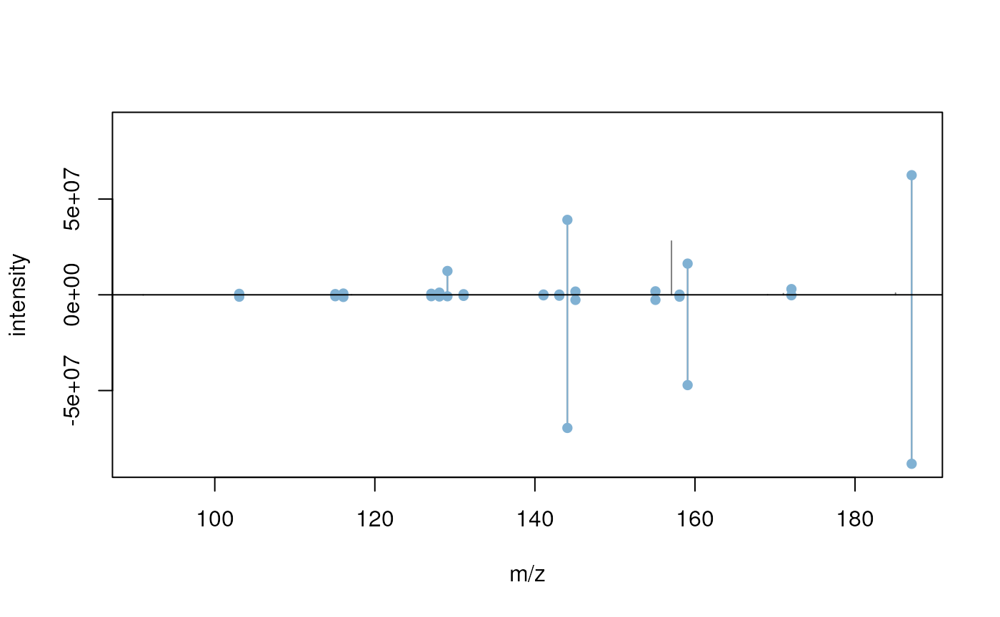

vignettes/MsBackendMassbank.Rmd
MsBackendMassbank.RmdPackage: MsBackendMassbank
Authors: RforMassSpectrometry Package Maintainer [cre], Michael Witting [aut] (https://orcid.org/0000-0002-1462-4426), Johannes Rainer [aut] (https://orcid.org/0000-0002-6977-7147), Michael Stravs [ctb]
Compiled: Sat Jan 1 08:54:01 2022
The Spectra package provides a central infrastructure for the handling of Mass Spectrometry (MS) data. The package supports interchangeable use of different backends to import MS data from a variety of sources (such as mzML files). The MsBackendMassbank package allows import and handling MS/MS spectrum data from Massbank. This vignette illustrates the usage of the MsBackendMassbank package to include MassBank data into MS data analysis workflow with the Spectra package in R.
The package can be installed with the BiocManager package. To install BiocManager use install.packages("BiocManager") and, after that, BiocManager::install("MsBackendMassbank") to install this package.
MassBank files (as provided by the Massbank github repository) store normally one library spectrum per file, typically centroided and of MS level 2. In our short example below, we load data from a file containing multiple library spectra per file or from files with each a single spectrum provided with this package. Below we first load all required packages and define the paths to the Massbank files.
library(Spectra)
library(MsBackendMassbank)
fls <- dir(system.file("extdata", package = "MsBackendMassbank"),
full.names = TRUE, pattern = "txt$")
fls## [1] "/__w/_temp/Library/MsBackendMassbank/extdata/BSU00001.txt"
## [2] "/__w/_temp/Library/MsBackendMassbank/extdata/MassBankRecords.txt"
## [3] "/__w/_temp/Library/MsBackendMassbank/extdata/RP000501.txt"
## [4] "/__w/_temp/Library/MsBackendMassbank/extdata/RP000502.txt"
## [5] "/__w/_temp/Library/MsBackendMassbank/extdata/RP000503.txt"
## [6] "/__w/_temp/Library/MsBackendMassbank/extdata/RP000511.txt"
## [7] "/__w/_temp/Library/MsBackendMassbank/extdata/RP000512.txt"
## [8] "/__w/_temp/Library/MsBackendMassbank/extdata/RP000513.txt"MS data can be accessed and analyzed through Spectra objects. Below we create a Spectra with the data from these mgf files. To this end we provide the file names and specify to use a MsBackendMassbank() backend as source to enable data import. First we import from a single file with multiple library spectra.
sps <- Spectra(fls[1],
source = MsBackendMassbank(),
backend = MsBackendDataFrame())With that we have now full access to all imported spectra variables that we list below.
spectraVariables(sps)## [1] "msLevel" "rtime"
## [3] "acquisitionNum" "scanIndex"
## [5] "dataStorage" "dataOrigin"
## [7] "centroided" "smoothed"
## [9] "polarity" "precScanNum"
## [11] "precursorMz" "precursorIntensity"
## [13] "precursorCharge" "collisionEnergy"
## [15] "isolationWindowLowerMz" "isolationWindowTargetMz"
## [17] "isolationWindowUpperMz" "acquistionNum"
## [19] "accession" "name"
## [21] "smiles" "exactmass"
## [23] "formula" "inchi"
## [25] "cas" "inchikey"
## [27] "adduct" "splash"
## [29] "title"The same is possible with multiple files, each containing a library spectrum.
sps <- Spectra(fls[-1],
source = MsBackendMassbank(),
backend = MsBackendDataFrame())
spectraVariables(sps)## [1] "msLevel" "rtime"
## [3] "acquisitionNum" "scanIndex"
## [5] "dataStorage" "dataOrigin"
## [7] "centroided" "smoothed"
## [9] "polarity" "precScanNum"
## [11] "precursorMz" "precursorIntensity"
## [13] "precursorCharge" "collisionEnergy"
## [15] "isolationWindowLowerMz" "isolationWindowTargetMz"
## [17] "isolationWindowUpperMz" "acquistionNum"
## [19] "accession" "name"
## [21] "smiles" "exactmass"
## [23] "formula" "inchi"
## [25] "cas" "inchikey"
## [27] "adduct" "splash"
## [29] "title"By default the complete metadata is read together with the spectra. This can increase loading time. The different metadata blocks can be skipped which reduces import time. This requires to define an additional data.frame indicating what shall be read.
# create data frame to indicate with metadata blocks shall be read.
metaDataBlocks <- data.frame(metadata = c("ac", "ch", "sp", "ms",
"record", "pk", "comment"),
read = rep(TRUE, 7))
sps <- Spectra(fls[-1],
source = MsBackendMassbank(),
backeend = MsBackendDataFrame(),
metaBlock = metaDataBlocks)
# all spectraVariables possible in MassBank are read
spectraVariables(sps)## [1] "msLevel" "rtime"
## [3] "acquisitionNum" "scanIndex"
## [5] "dataStorage" "dataOrigin"
## [7] "centroided" "smoothed"
## [9] "polarity" "precScanNum"
## [11] "precursorMz" "precursorIntensity"
## [13] "precursorCharge" "collisionEnergy"
## [15] "isolationWindowLowerMz" "isolationWindowTargetMz"
## [17] "isolationWindowUpperMz" "acquistionNum"
## [19] "accession" "name"
## [21] "smiles" "exactmass"
## [23] "formula" "inchi"
## [25] "cas" "inchikey"
## [27] "adduct" "splash"
## [29] "title" "instrument"
## [31] "instrument_type" "ms_ms_type"
## [33] "ms_cap_voltage" "ms_col_gas"
## [35] "ms_desolv_gas_flow" "ms_desolv_temp"
## [37] "ms_frag_mode" "ms_ionization"
## [39] "ms_ionization_energy" "ms_laser"
## [41] "ms_matrix" "ms_mass_accuracy"
## [43] "ms_mass_range" "ms_reagent_gas"
## [45] "ms_resolution" "ms_scan_setting"
## [47] "ms_source_temp" "chrom_carrier_gas"
## [49] "chrom_column" "chrom_column_temp"
## [51] "chrom_column_temp_gradient" "chrom_flow_gradient"
## [53] "chrom_flow_rate" "chrom_inj_temp"
## [55] "chrom_inj_temp_gradient" "chrom_rti_kovats"
## [57] "chrom_rti_lee" "chrom_rti_naps"
## [59] "chrom_rti_uoa" "chrom_rti_uoa_pred"
## [61] "chrom_rt" "chrom_rt_uoa_pred"
## [63] "chrom_solvent" "chrom_transfer_temp"
## [65] "ims_instrument_type" "ims_drift_gas"
## [67] "ims_drift_time" "ims_ccs"
## [69] "general_conc" "compound_class"
## [71] "link_cayman" "link_chebi"
## [73] "link_chembl" "link_chempdb"
## [75] "link_chemspider" "link_comptox"
## [77] "link_hmdb" "link_kappaview"
## [79] "link_kegg" "link_knapsack"
## [81] "link_lipidbank" "link_lipidmaps"
## [83] "link_nikkaji" "link_pubchem"
## [85] "link_zinc" "scientific_name"
## [87] "lineage" "link"
## [89] "sample" "focus_base_peak"
## [91] "focus_derivative_form" "focus_derivative_mass"
## [93] "focus_derivative_type" "focus_ion_type"
## [95] "data_processing_comment" "data_processing_deprofile"
## [97] "data_processing_find" "data_processing_reanalyze"
## [99] "data_processing_recalibrate" "data_processing_whole"
## [101] "deprecated" "date"
## [103] "authors" "license"
## [105] "copyright" "publication"
## [107] "project" "pknum"
## [109] "comment"
# all NA columns can be dropped
spectraVariables(dropNaSpectraVariables(sps))## [1] "msLevel" "rtime"
## [3] "acquisitionNum" "scanIndex"
## [5] "dataStorage" "dataOrigin"
## [7] "centroided" "smoothed"
## [9] "polarity" "precScanNum"
## [11] "precursorMz" "precursorIntensity"
## [13] "precursorCharge" "collisionEnergy"
## [15] "isolationWindowLowerMz" "isolationWindowTargetMz"
## [17] "isolationWindowUpperMz" "acquistionNum"
## [19] "accession" "name"
## [21] "smiles" "exactmass"
## [23] "formula" "inchi"
## [25] "cas" "inchikey"
## [27] "adduct" "splash"
## [29] "title" "instrument"
## [31] "instrument_type" "ms_ms_type"
## [33] "ms_frag_mode" "ms_ionization"
## [35] "chrom_column" "chrom_flow_gradient"
## [37] "chrom_flow_rate" "chrom_rt"
## [39] "chrom_solvent" "compound_class"
## [41] "link_chebi" "link_chemspider"
## [43] "link_comptox" "link_kegg"
## [45] "link_pubchem" "focus_base_peak"
## [47] "data_processing_reanalyze" "data_processing_whole"
## [49] "date" "authors"
## [51] "license" "copyright"
## [53] "pknum" "comment"Besides default spectra variables, such as msLevel, rtime, precursorMz, we also have additional spectra variables such as the title of each spectrum in the mgf file.
sps$rtime## rtime rtime rtime rtime rtime rtime
## 142.14 142.14 142.14 142.14 142.14 142.14 143.94 143.94 143.94
sps$title##
## "L-Tryptophan; LC-ESI-QTOF; MS2; CE: 10; R=; [M+H]+"
##
## "L-Tryptophan; LC-ESI-QTOF; MS2; CE: 20; R=; [M+H]+"
##
## "L-Tryptophan; LC-ESI-QTOF; MS2; CE: 40; R=; [M+H]+"
## title
## "L-Tryptophan; LC-ESI-QTOF; MS2; CE: 10; R=; [M+H]+"
## title
## "L-Tryptophan; LC-ESI-QTOF; MS2; CE: 20; R=; [M+H]+"
## title
## "L-Tryptophan; LC-ESI-QTOF; MS2; CE: 40; R=; [M+H]+"
## title
## "L-Tryptophan; LC-ESI-QTOF; MS2; CE: 10; R=; [M-H]-"
## title
## "L-Tryptophan; LC-ESI-QTOF; MS2; CE: 20; R=; [M-H]-"
## title
## "L-Tryptophan; LC-ESI-QTOF; MS2; CE: 40; R=; [M-H]-"In addition we can also access the m/z and intensity values of each spectrum.
mz(sps)## NumericList of length 9
## [[""]] 74.0233 132.0807 144.0805 146.0598 ... 170.0597 188.0699 205.0965
## [[""]] 74.0232 77.0381 86.0027 91.0539 ... 160.0947 170.0596 171.0625 188.07
## [[""]] 53.0019 53.0383 63.0225 65.0381 ... 158.0817 159.0921 160.0755 170.06
## [["mz"]] 74.0233 132.0807 144.0805 146.0598 ... 170.0597 188.0699 205.0965
## [["mz"]] 74.0232 77.0381 86.0027 91.0539 ... 160.0947 170.0596 171.0625 188.07
## [["mz"]] 53.0019 53.0383 63.0225 65.0381 ... 158.0817 159.0921 160.0755 170.06
## [["mz"]] 72.0095 116.0517 117.0554 159.0935 186.0558 203.0826
## [["mz"]] 72.0094 74.0253 116.0511 117.0539 ... 162.0307 186.0548 203.0818
## [["mz"]] 74.0253 116.0508
intensity(sps)## NumericList of length 9
## [[""]] 646 980 2114 20052 1248 7628 2036 494048 75708
## [[""]] 10186 142 142 750 138 490 126 ... 14266 1478 1600 16504 1446 109762
## [[""]] 324 184 138 3770 500 800 7214 3238 ... 2802 206 898 162 166 814 250 1840
## [["intensity"]] 646 980 2114 20052 1248 7628 2036 494048 75708
## [["intensity"]] 10186 142 142 750 138 490 ... 14266 1478 1600 16504 1446 109762
## [["intensity"]] 324 184 138 3770 500 800 7214 ... 206 898 162 166 814 250 1840
## [["intensity"]] 150 200 32 232 80 12162
## [["intensity"]] 460 3630 658 74 28 190 44 142 50 52 634
## [["intensity"]] 282 424When importing a large number of mgf files, setting nonStop = TRUE prevents the call to stop whenever problematic mgf files are encountered.
sps <- Spectra(fls, source = MsBackendMassbank(), nonStop = TRUE)An alternative to the import of the MassBank data from individual text files (which can take a considerable amount of time) is to directly access the MS/MS data in the MassBank MySQL database. For demonstration purposes we are using here a tiny subset of the MassBank data which is stored as a SQLite database within this package.
At present it is not possible to directly connect to the main MassBank production MySQL server, thus, to use the MsBackendMassbankSql backend it is required to install the database locally. The MySQL database dump for each MassBank release can be downloaded from here. This dump could be imported to a local MySQL server.
To use the MsBackendMassbankSql it is required to first connect to a MassBank database. Below we show the R code which could be used for that - but the actual settings (user name, password, database name, or host) will depend on where and how the MassBank database was installed.
library(RMariaDB)
con <- dbConnect(MariaDB(), host = "localhost", user = "massbank",
dbname = "MassBank")To illustrate the general functionality of this backend we use a tiny subset of the MassBank (release 2020.10) which is provided as an small SQLite database within this package. Below we connect to this database.
library(RSQLite)
con <- dbConnect(SQLite(), system.file("sql", "minimassbank.sqlite",
package = "MsBackendMassbank"))We next initialize the MsBackendMassbankSql backend which supports direct access to the MassBank in a SQL database and create a Spectra object from that.
mb <- Spectra(con, source = MsBackendMassbankSql())
mb## MSn data (Spectra) with 70 spectra in a MsBackendMassbankSql backend:
## msLevel precursorMz polarity
## <integer> <numeric> <integer>
## 1 2 506 0
## 2 NA NA 1
## 3 NA NA 0
## 4 NA NA 1
## 5 NA NA 0
## ... ... ... ...
## 66 2 185.028 0
## 67 2 455.290 1
## 68 2 253.051 0
## 69 2 358.238 1
## 70 2 256.170 1
## ... 42 more variables/columns.
## Use 'spectraVariables' to list all of them.We can now use this Spectra object to access and use the MassBank data for our analysis. Note that the Spectra object itself does not contain any data from MassBank. Any data will be fetched on demand from the database backend.
To get a listing of all available annotations for each spectrum (the so-called spectra variables) we can use the spectraVariables function.
spectraVariables(mb)## [1] "msLevel" "rtime"
## [3] "acquisitionNum" "scanIndex"
## [5] "dataStorage" "dataOrigin"
## [7] "centroided" "smoothed"
## [9] "polarity" "precScanNum"
## [11] "precursorMz" "precursorIntensity"
## [13] "precursorCharge" "collisionEnergy"
## [15] "isolationWindowLowerMz" "isolationWindowTargetMz"
## [17] "isolationWindowUpperMz" "spectrum_id"
## [19] "spectrum_name" "date"
## [21] "authors" "license"
## [23] "copyright" "publication"
## [25] "splash" "compound_id"
## [27] "adduct" "ionization"
## [29] "ionization_voltage" "fragmentation_mode"
## [31] "collision_energy_text" "instrument"
## [33] "instrument_type" "formula"
## [35] "exactmass" "smiles"
## [37] "inchi" "inchikey"
## [39] "cas" "pubchem"
## [41] "synonym" "precursor_mz_text"
## [43] "compound_name"Through the MsBackendMassbankSql we can thus access spectra information as well as its annotation.
We can access core spectra variables, such as the MS level with the corresponding function msLevel.
## [1] 2 NA NA NA NA 2Spectra variables can also be accessed with $ and the name of the variable. Thus, MS levels can also be accessed with $msLevel:
head(mb$msLevel)## [1] 2 NA NA NA NA 2In addition to spectra variables, we can also get the actual peaks (i.e. m/z and intensity values) with the mz and intensity functions:
mz(mb)## NumericList of length 70
## [["MCH00020"]] 146.760803 158.863541 174.988785 ... 487.989319 585.88446
## [["MCH00002"]] 22.99 23.07 23.19 38.98 53.15 ... 413.22 414.22 429.16 495.2
## [["MCH00006"]] 108.099566 152.005378 153.01824 ... 409.06729 499.103447
## [["MCH00009"]] 137.0227 138.025605 139.034602 ... 316.303106 352.234228
## [["MCH00014"]] 112.977759 205.053323 208.041128 ... 671.1778 673.200866
## [["MCH00019"]] 78.893929 183.011719 193.957916 ... 408.010193 426.021942
## [["MCH00012"]] 167.03389 168.040758 333.079965 ... 365.040698 373.073473
## [["MCH00003"]] 195.09167 196.095033
## [["MCH00016"]] 108.096149 152.004656 153.01824 ... 409.065314 491.043775
## [["MCH00001"]] 1278.12 1279.11 1279.18 1306.21 ... 2091.32 2092.3 2136.33
## ...
## <60 more elements>Note that not all spectra from the database were generated using the same instrumentation. Below we list the number of spectra for each type of instrument.
table(mb$instrument_type)##
## LC-ESI-ITFT LC-ESI-QFT MALDI-TOF
## 3 50 17We next subset the data to all spectra from ions generated by electro spray ionization (ESI).
mb <- mb[mb$ionization == "ESI"]
length(mb)## [1] 50As a simple example to illustrate the Spectra functionality we next calculate spectra similarity between one spectrum against all other spectra in the database. To this end we use the compareSpectra function with the normalized dot product as similarity function and allowing 20 ppm difference in m/z between matching peaks
library(MsCoreUtils)
sims <- compareSpectra(mb[11], mb[-11], FUN = ndotproduct, ppm = 40)
max(sims)## [1] 0.7507467We plot next a mirror plot for the two best matching spectra.
plotSpectraMirror(mb[11], mb[(which.max(sims) + 1)], ppm = 40)
We can also retrieve the compound information for these two best matching spectra. Note that this compounds function works only with the MsBackendMassbankSql backend as it retrieves the corresponding information from the database’s compound annotation table.
## DataFrame with 2 rows and 10 columns
## compound_id formula exactmass smiles
## <integer> <character> <numeric> <character>
## 1 31 C12H10O2 186.068 COC1=C(C=O)C2=CC=CC=..
## 2 45 C12H10O2 186.068 COC1=CC=C(C=O)C2=CC=..
## inchi inchikey cas pubchem
## <character> <character> <character> <character>
## 1 InChI=1S/C12H10O2/c1.. YIQGLTKAOHRZOL-UHFFF.. 1/12/5392 CID:79352
## 2 InChI=1S/C12H10O2/c1.. MVXMNHYVCLMLDD-UHFFF.. 15971-29-6 CID:85217
## synonym name
## <CharacterList> <character>
## 1 2-Methoxy-1-naphthal..,2-methoxynaphthalene.. 2-Methoxy-1-naphthal..
## 2 4-Methoxy-1-Naphthal..,4-methoxynaphthalene.. 4-Methoxy-1-Naphthal..## R Under development (unstable) (2021-12-30 r81418)
## Platform: x86_64-pc-linux-gnu (64-bit)
## Running under: Ubuntu 20.04.3 LTS
##
## Matrix products: default
## BLAS/LAPACK: /usr/lib/x86_64-linux-gnu/openblas-pthread/libopenblasp-r0.3.8.so
##
## locale:
## [1] LC_CTYPE=en_US.UTF-8 LC_NUMERIC=C
## [3] LC_TIME=en_US.UTF-8 LC_COLLATE=en_US.UTF-8
## [5] LC_MONETARY=en_US.UTF-8 LC_MESSAGES=C
## [7] LC_PAPER=en_US.UTF-8 LC_NAME=C
## [9] LC_ADDRESS=C LC_TELEPHONE=C
## [11] LC_MEASUREMENT=en_US.UTF-8 LC_IDENTIFICATION=C
##
## attached base packages:
## [1] stats4 stats graphics grDevices utils datasets methods
## [8] base
##
## other attached packages:
## [1] MsCoreUtils_1.7.1 RSQLite_2.2.9 MsBackendMassbank_1.3.0
## [4] Spectra_1.5.4 ProtGenerics_1.27.1 BiocParallel_1.29.8
## [7] S4Vectors_0.33.8 BiocGenerics_0.41.2 BiocStyle_2.23.1
##
## loaded via a namespace (and not attached):
## [1] Rcpp_1.0.7 highr_0.9 bslib_0.3.1
## [4] compiler_4.2.0 BiocManager_1.30.16 jquerylib_0.1.4
## [7] tools_4.2.0 bit_4.0.4 digest_0.6.29
## [10] jsonlite_1.7.2 evaluate_0.14 memoise_2.0.1
## [13] clue_0.3-60 pkgconfig_2.0.3 rlang_0.4.12
## [16] DBI_1.1.2 yaml_2.2.1 parallel_4.2.0
## [19] pkgdown_2.0.1.9000 xfun_0.29 fastmap_1.1.0
## [22] stringr_1.4.0 knitr_1.37 cluster_2.1.2
## [25] vctrs_0.3.8 desc_1.4.0 fs_1.5.2
## [28] sass_0.4.0 systemfonts_1.0.3 IRanges_2.29.1
## [31] bit64_4.0.5 rprojroot_2.0.2 R6_2.5.1
## [34] textshaping_0.3.6 rmarkdown_2.11 bookdown_0.24
## [37] blob_1.2.2 purrr_0.3.4 magrittr_2.0.1
## [40] htmltools_0.5.2 MASS_7.3-54 ragg_1.2.1
## [43] stringi_1.7.6 cachem_1.0.6 crayon_1.4.2